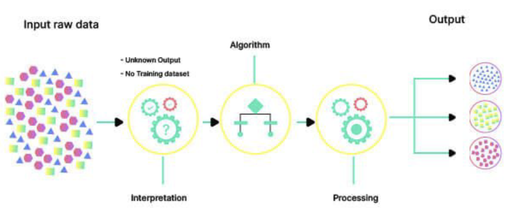

Due to market factors in the automotive industry, many consumers face difficulties purchasing used vehicles due to rising prices and information asymmetry with sellers. Since the past pandemic, geopolitical and supply chain issues and other electronic components have disrupted the supply of new and used vehicles over the past few years. In addition to this, economic conditions such as continued inflation and rising interest rates have caused the price of used cars to increase dramatically since the pandemic. The graph below shows that used vehicle prices have increased since COVID-19, with interest rates rising. It shows that the overall cost to the consumer to purchase a vehicle has also increased dramatically.

All of these situations have made consumers more cautious about their decisions to purchase vehicles, which means that consumers need to be careful when buying used cars to avoid overpaying for a vehicle and to ensure that the vehicle price is reasonable. Determining a vehicle price for a used vehicle can be very challenging for consumers. On the other hand, from the seller's point of view, consumers are often at a disadvantage because they have more vehicle expertise than the consumer.According to a study conducted by Biglaiser, Li, Murry, and Zhou (2018), information asymmetry is a significant issue in the used car market. The sellers often have more information about the quality of the car than the buyers, which can lead to market inefficiencies. To address this information imbalance, it is necessary to analyze various characteristics of the vehicle as well as external factors related to the purchase of the car to predict a more reasonable price for the consumer. This approach can prevent consumers from overpaying and help sellers sell their vehicles reasonably.
Most consumers shopping for used vehicles these days utilize online platforms such as CarGurus, Carmax, and Carvana. These platforms provide consumers with cars for sale and various attributes about the vehicle. Based on this information, consumers research their favorite cars, select a car, and ultimately communicate with the seller to discuss the vehicle's condition, negotiate a price, purchase terms, and make a final decision. However, most consumers need specialized car knowledge, so they will likely focus on their preferred vehicle characteristics within their budget and rely on the seller for other technical information. If consumers had insight into how each vehicle's characteristic affects its price, they would be better positioned to make a rational purchase. This project aims to provide such insights to consumers buying used cars. To accomplish this, data is first collected, including several vehicle characteristics such as year of manufacture, make and model, mileage, size, and price. Based on the collected data, an analysis is conducted to understand the relationship between various vehicle characteristics and how they impact vehicle prices in the used car market. Finally, different machine learning techniques are utilized to determine which vehicle characteristics significantly influence vehicle prices and to find a suitable model for predicting used vehicle prices. Through this project, the aim is to increase transparency in the used vehicle market and provide insights and information to help consumers make better decisions. It will improve consumer confidence in buying used vehicles and promote more rational consumption.
Based on the data containing vehicle characteristics, analytics using various machine learning techniques can be used to explore multiple aspects of the data and derive more meaningful information. Unsupervised learning, one of the machine learning analytics techniques, can be used to identify patterns and characteristics in vehicle attribute data and use them to gain valuable insights in various areas. Unsupervised learning is a branch of machine learning that learns data without labels or explicit guidance. It is used to discover hidden structures or patterns in data or to group or cluster data. Below is a flowchart that outlines the process of unsupervised learning.
Source: (https://blog.nimblebox.ai/machine-learning-workflow)
This project uses two types of unsupervised learning: clustering and association rule mining. First, data points with similar vehicle characteristics are grouped into the same group or cluster to create an easy-to-understand structure and analyze the results. For this purpose, clustering is performed based on the features of used vehicles through partitional clustering and hierarchical clustering, among other clustering techniques. This allows us to group similar cars based on different vehicle characteristics and find insights into vehicle characteristics such as horsepower, vehicle size, age, and mileage from each created cluster. These clustering analyses allow us to analyze price volatility and value patterns across clusters and see which characteristics impact vehicle prices the most. They can also reveal connections between vehicle characteristics by conducting Association rule mining. For example, you can see the association between features associated with fuel economy or aspects related to car brands and prices. By analyzing vehicle characteristics associated with a vehicle's price, you can provide vehicle sellers or buyers with information that helps them better understand the factors that shape price. These unsupervised learning results are visualized and presented to consumers, helping to increase transparency in the used car market. They also reduce the asymmetry of used car information between consumers and sellers and provide personalized information to help consumers make better decisions. The results of these analytics will enable more efficient and reliable transactions in the used car market.
In addition to unsupervised learning techniques like the ones above, supervised learning techniques are also used to analyze the data. One supervised learning technique is the Naïve Bayes classifier, a probabilistic classification technique based on Bayes' theorem, which assumes independence between variables. It is a relatively simple model, which is fast to learn and predict, and is particularly useful when dealing with large datasets, such as the data in this project. Since it does not consider interactions between variables and makes independent assumptions, it can perform well on a relatively small number of characteristics, which is helpful in this project based on a few critical characteristics of vehicles. To apply Naïve Bayes with the given data, one should first select the variables that can affect the price of a vehicle, such as the brand, model, year, mileage, vehicle type, fuel type, transmission type, etc. Based on these, the prior probabilities for the possible values of each characteristic are estimated, and Bayes' theorem is used to calculate the posterior probability of each class (price category or class) for a new data point. The probability that the vehicle belongs to a particular price category can be estimated based on these calculated posterior probabilities. This analysis allows you to see how each variable affects the price of a used vehicle and whether consumers can predict the price of a vehicle based on specific characteristics.
Next, the Decision Tree is one of the algorithms corresponding to supervised learning in machine learning, which is a powerful prediction model used to perform classification or regression analysis by converting data into rules that can be easily interpreted. It is an effective technique that helps you easily analyze which characteristics of various vehicles significantly impact the formation of vehicle prices. To do this, you can define multiple characteristics of used vehicles, such as brand, model, production year, mileage, vehicle type, etc., as features, define the target variable as vehicle price, and predict the vehicle price through regression of the decision tree. When you apply the decision tree to your analysis, you can see the importance of each vehicle's characteristics. You can also follow the tree branches and see patterns in which characteristics affect price at each branch. It gives you insight into which factors affect used vehicle prices more than others. Because this technique is easy to interpret and visually understandable, you can clearly see which characteristics impact a vehicle's price in the used vehicle market. It can give you insight into how specific characteristics affect price when consumers shop for a used vehicle.
Support vector machines (SVMs) are one of the most powerful algorithms used in the field of machine learning, primarily utilized for classification and regression problems. SVMs are used to classify given data into specific categories or to predict continuous values. SVMs are great at dealing with a wide range of vehicle characteristics and complex patterns, which makes them an excellent fit for predicting or categorizing vehicle prices. For starters, the price of a used vehicle is affected by many different characteristics: age, mileage, horsepower, size, etc. SVMs can effectively deal with these other characteristics in a high-dimensional space. In addition, SVMs focus on separating the data to find the optimal decision boundary. This can provide a clear and robust decision boundary for predicting vehicle prices. In addition, SVMs that rely on support vectors to create decision boundaries are effective at making models insensitive to outliers, and they have good generalization ability, meaning they can generalize well to predict newly used vehicle data. As such, SVMs can provide insights into the used vehicle market and help consumers make rational purchases by predicting reasonable vehicle prices and categorizing price categories based on several vehicle characteristics.
Regression is a crucial analytical technique used in statistics and machine learning to model relationships between variables. Specifically, it is employed to explain and predict the relationship between a dependent variable (the variable to be predicted) and independent variables (variables used for prediction). Regression analysis aids in identifying patterns in data, understanding interactions between variables, and constructing predictive models. Linear Regression is a type of regression analysis that assumes a linear relationship between the dependent variable and independent variables. It models the relationship between variables as a straight line, predicting changes in the dependent variable based on changes in independent variables. Linear regression can be divided into simple linear regression, which uses a single independent variable, and multiple linear regression, which involves multiple independent variables.
Predicting vehicle prices through linear regression based on various features such as horsepower, age, mileage, fuel efficiency, and size can be understood as follows. Features like horsepower or fuel efficiency are assumed to be factors influencing the vehicle's price. The linear regression model mathematically models the relationship between these features, predicting how changes in independent variables affect the dependent variable, which, in this case, is the vehicle price. For instance, if there is an assumed positive correlation between an increase in horsepower and an increase in vehicle price, the linear regression model would set the coefficient for that feature as positive, reflecting this relationship. Similarly, if features like age or mileage are expected to lead to a decrease in price, the coefficients for these features would be set as negative. In this manner, considering the coefficients of all features, the linear regression model calculates the impact of each feature on the vehicle price. By incorporating the learned coefficients, the model predicts the expected price based on the given features of a vehicle. Thus, linear regression provides a straightforward yet effective means of predicting prices by considering various characteristics of a vehicle.
Can similar vehicles be grouped based on various features such as size, body type, engine, etc? It can help narrow down the choices by quickly identifying vehicle segments that match the consumer's preferences when purchasing a vehicle. For example, clusters of low-cost cars with high mileage or high-cost vehicles with low mileage can be found.or high-cost vehicles with low mileage.
Discovering associations between different vehicle features is possible? For example, particular makes and models of vehicles often have specific mileage ranges. These rules can provide insight into the vehicle characteristics that consumers prefer. For instance, if low-mileage cars and vehicles of a particular brand are frequently sold together, it could be interpreted as a sign that consumers prefer this combination. The associations found can also be used to predict specific characteristics of a vehicle, given other factors.
Can the features of a vehicle be used to predict the price range of a car based on its features? Considering various vehicle features allows the application of multiple linear regression or nonlinear regression models. Typically, important predictors include the vehicle manufacturer, model, age, and mileage. Additional features such as fuel efficiency, engine size, body type, and safety features can be considered for a more comprehensive analysis.
Can the model identify the key factors that strongly correlate with vehicle price? The model can identify key factors that have a significant correlation with vehicle prices. By analyzing the coefficients of the regression model, one can pinpoint which features or characteristics of a vehicle play a crucial role in determining its price. For example, the model may reveal that factors like horsepower, age, mileage, and fuel efficiency are strongly correlated with the vehicle's price, providing valuable insights for understanding the pricing dynamics in the dataset.
Determining the relative importance of various vehicle features is possible? Determining the relative importance of various vehicle features is feasible. Utilizing a multiple linear regression model allows for comparing the relative impact of each feature through their coefficients. Positive coefficients indicate a tendency for the feature to increase the price, while negative coefficients suggest a decreasing influence. Techniques such as variable selection methods or algorithms like decision trees can assist in identifying important features and assessing their relative importance. Statistical methods like correlation analysis or variable importance analysis can also be employed to examine the relationships between features. In summary, employing various analytical techniques to determine the relative importance of vehicle features is possible, and interpretation of relative importance can be based on the chosen methodology.
Can analyzing the relationship between vehicle characteristics and price provide information that helps vehicle buyers determine the price of a vehicle? Analyzing the relationship between vehicle features and prices can provide crucial insights for potential car buyers. Through such analysis, car buyers can comprehend the impact of specific features on vehicle prices and identify essential factors to consider in determining prices. For instance, if the analysis reveals a positive correlation between horsepower or fuel efficiency and prices, it indicates a tendency for vehicles with higher horsepower or better fuel efficiency to be more expensive or less expensive. This information assists car buyers in choosing vehicles with desired features while considering their budget constraints.
Can vehicles be clustered according to their features? It is possible to cluster vehicles based on their features. Using clustering techniques such as K-means clustering or hierarchical clustering, vehicles can be grouped into clusters based on similarities in their characteristics. This helps identify patterns and relationships within the dataset, allowing for a better understanding of how different features contribute to the overall grouping of vehicles.
Is it possible to identify the relationships among the features of a vehicle? The relationships among various features of a vehicle can be identified. Utilizing diverse statistical techniques and machine learning algorithms, one can investigate the interactions and influences among these features. Methods such as correlation analysis, regression analysis, and various techniques used in machine learning help identify and understand patterns and correlations among the features. This provides insights into how different vehicle characteristics impact each other.
How does a car's maintenance history or accident history affect its resale value? Both the maintenance history and accident history significantly impact the resale value of a vehicle. A sound maintenance record enhances the vehicle's reliability, supporting long-term performance and consequently boosting its resale value. On the contrary, a vehicle with an accident history can potentially lead to repair and safety issues, resulting in a decrease in resale value. Prospective buyers prioritize safety and reliability, making these histories crucial considerations.
How does the number of previous owners affect a car's resale value? The number of previous owners does impact the resale value of a car. It can mitigate the depreciation of a vehicle with high mileage or older age, and a well-maintained history by the previous owner can contribute to an increase in resale value. However, this should be considered in conjunction with various other variables for a comprehensive assessment.